OPRN Studio · 이벤트 편집기 · UX 개선 제안 · 2026-09-03
같은 명령 목록을 네 가지 보기로 그리고, 같은 명령을 두 곳에서 고치고, 한 화면에 버튼 모양 26종과 글자 크기 8종을 섞어 쓴다. 실행 중인 편집기에서 스크린샷 45장과 DOM 계측으로 확인한 현재 상태와, 기능을 더하지 않고 표면을 줄이는 쪽으로 다시 그린 개선안이다.
이 편집기가 불편한 이유는 기능이 모자라서가 아니다. 같은 일을 하는 표면이 너무 많고, 그 표면들이 서로 다른 시각 언어를 쓴다.
명령 목록 보기 4종 · 명령 편집면 2종 · 조건 추가 경로 2종 · CSS 세대 6개(56시트, 21,329줄, !important 89개). 개선안은 표면을 「대본 하나 · 인스펙터 하나 · 깊이 하나」로 줄이고, 행 문법과 토큰을 하나로 고정하는 것이다.
전부 브라우저에서 DOM·픽셀로 잰 값이다. 추정치는 없다. 측정 방법은 부록에 있다.
| 항목 | 값 | 근거 |
|---|---|---|
| 같은 명령 목록을 그리는 보기 방식 | 4 | 목록 · 스토리 · 미리보기 · 플로우 (event-view-toggle-*) |
| 같은 명령을 고치는 편집면 | 2 | 단일 클릭 = 우측 인스펙터(340px), 더블 클릭 = 모달(940×680). 폼 내용 동일 |
| 페이지 조건을 추가하는 경로 | 2 | 칩 13개 + 「고급 조건」 드롭다운·조건 추가 버튼 |
| 한 화면의 버튼 스타일 종류 (배경·글자색·테두리·라운딩·글자 크기·굵기·높이) | 26 | 목록 보기 1440. 스토리 24, 1024·1280·1920 에서 31~32 |
| 글자 크기 종류 | 8 | 10 · 10.5 · 11 · 11.5 · 12 · 13 · 14 · 18px (1280 이상에서 15px 추가로 9) |
| 11px 이하 텍스트 비율 | 41% · 70% | 목록 67/165, 스토리 121/174 텍스트 노드 |
| 라운딩(border-radius) 종류 | 10 | 2 · 3 · 4 · 5 · 6 · 7 · 8 · 10px · 50% · 999px |
| SVG 아이콘 / 이모지·글리프 아이콘 버튼 | 0 / 43 | 스토리 보기. 카드마다 ↑ ↓ ✎ ✕ 4개가 DOM 에 상주 |
| 대비 4.5:1 미만 텍스트 노드 | 37 | 목록 보기. 레일 요약 4.14 · 되돌리기 4.2 · 선택지 토큰 3.67 |
| 명령 영역 빈 화소 비율 | 91.2% | 목록 1440. 스토리 96.3 · 플로우 92.4 · 미리보기 88.4 · 빈 페이지 98.9 |
| 14개 명령 중 한 화면에 보이는 수 | 12 · 10 · 8 | 1440 · 1280 · 1024. 행 높이 38px, 행 폭 1171px, 평균 글자 28자 |
| 겹치는 층(편집기 → 명령 대화상자 → 레코드 선택 → 확인) | 4 | 편집기 창은 어느 뷰포트에서도 화면 전체(1440×900 = 창 크기). 맵은 보이지 않는다 |
| 명령 피커 | 127개 · 13개 | 4탭 127개 명령, 42px 전폭 행이라 한 화면 13개. 아이콘 0 |
| 이벤트 편집기 CSS | 56시트 · 21,329줄 | !important 89개 · font-size 선언값 19종 · radius 선언값 12종 |
「이 페이지가 하는 일」 하나를 네 가지 보기가 각자의 문법으로 그린다. 보기는 3주 사이에 하나씩 늘었고, 지워진 것은 없다.
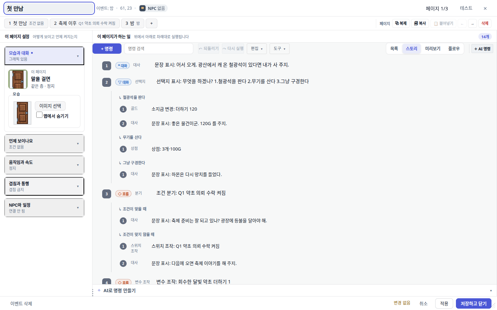
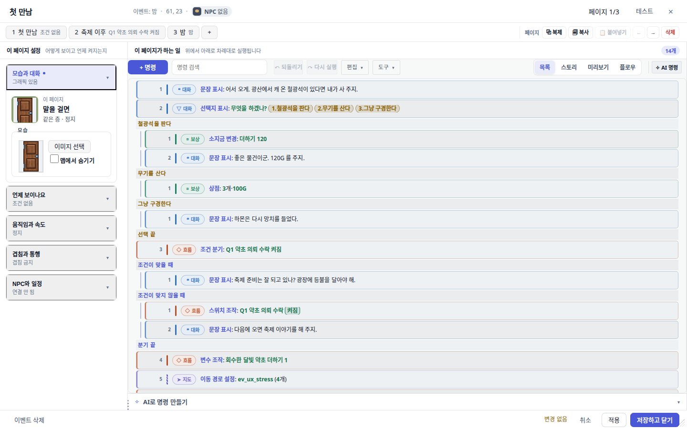
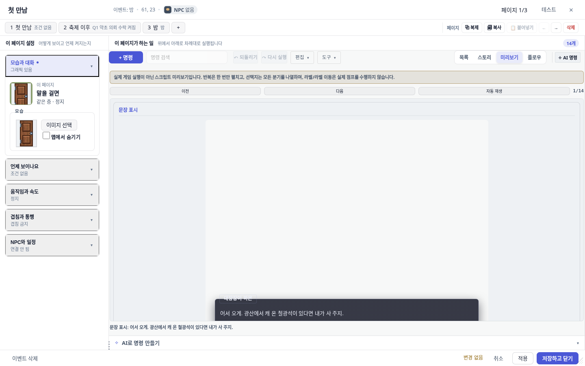
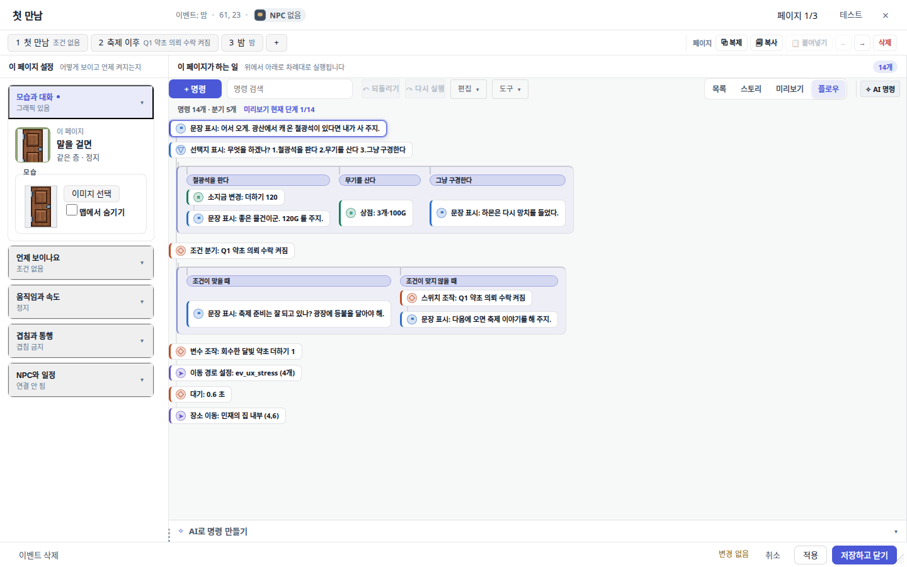
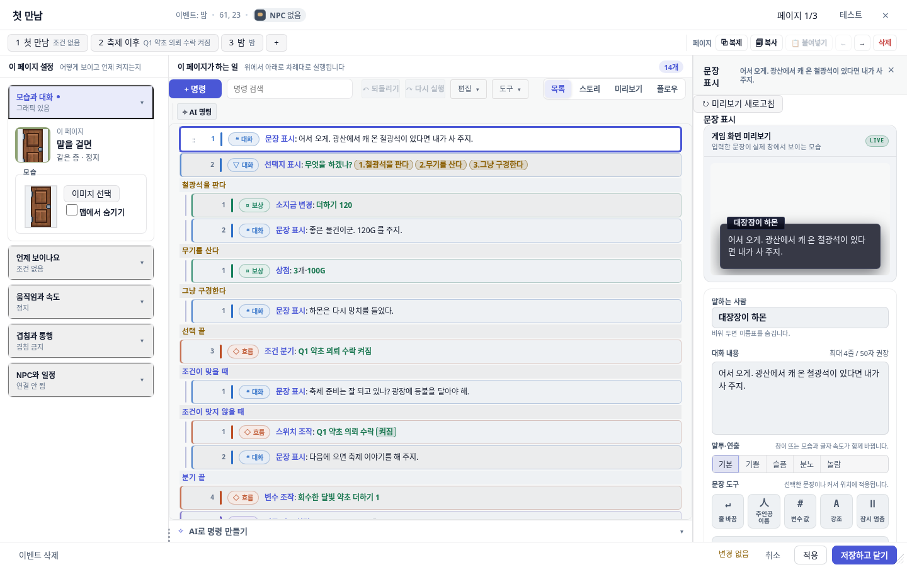
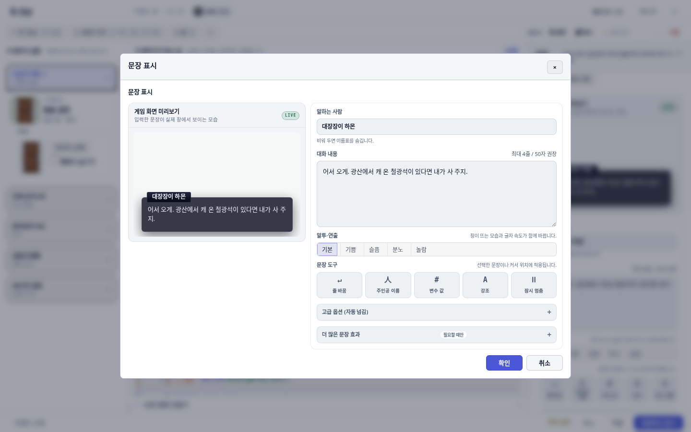
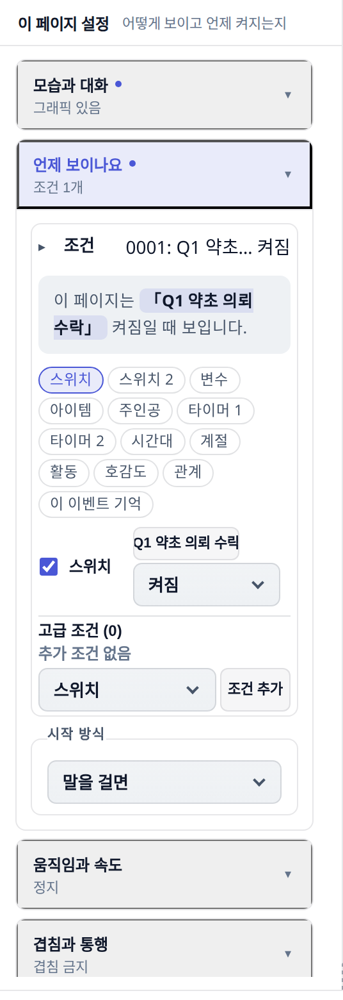
왜 문제인가. 보기·편집면·경로가 늘어날 때마다 사용자는 「어느 것이 진짜인가」를 한 번씩 더 판단해야 한다. 네 보기의 결과가 같다는 사실은 써 보기 전에는 알 수 없고, 인스펙터에서 고친 값이 모달에도 반영되는지도 확인해야 안심이 된다.
더 큰 비용은 시각 언어다. 보기마다 칩 색·아이콘 모양·라벨 어휘·번호 위치가 다르므로, 한 보기에서 익힌 눈이 다른 보기에서는 쓸모가 없다. 다음 절이 그 차이를 잰다.
보기 4종의 도입 시점은 git log -S 로 확인했다: 스토리 1bb59708(08-07), 미리보기 a4a23ca9(08-29), 플로우 cf2471cf(08-30). 인스펙터는 ae6a3ee0(08-04), 모달은 552b440e(07-03).
한 화면 안의 버튼·글자·모서리를 전수 계측했다. 숫자는 디자인 결정이 아니라 CSS 세대 수의 함수다.
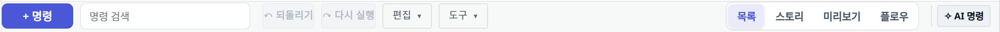
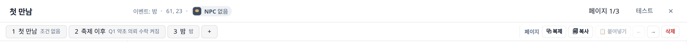
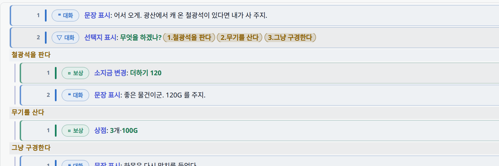
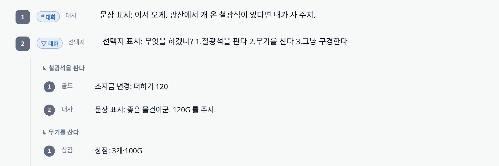
| 항목 (모달 안 보이는 요소 전수) | 목록 보기 | 스토리 보기 | 1024 · 1280 · 1920 | 제안 기준 |
|---|---|---|---|---|
| 버튼 스타일 시그니처 종류 | 26 | 24 | 32 · 31 · 31 | ≤ 6 |
| 글자 크기 종류 | 8 | 8 | 9 · 9 · 9 | 4 |
| 11px 이하 텍스트 노드 비율 | 41% | 70% | — | 0% (최소 12px) |
| 라운딩 종류 | 10 | 8 | 10 · 10 · 10 | 2 (6 · 4px) |
| 텍스트 색 종류 | 8 | 7 | 9 · 9 · 9 | 3 + 분류색 6 |
| SVG 아이콘 | 0 | 0 | 1 · 1 · 1 | 한 세트 |
| 이모지·글리프 아이콘 버튼 | 1 | 43 | 1 · 1 · 1 | 0 |
| 대비 4.5:1 미만 텍스트 노드 | 37 | 25 | 37 · 37 · 33 | 0 |
| 보이는 버튼 수 (선택 없음) | 63 | 105 | 73 · 73 · 73 | ≤ 40 |
시그니처 = 배경색 | 글자색 | 테두리 | 라운딩 | 글자 크기 | 굵기 | 높이(px). 같은 「보조 버튼」이라도 세대마다 값이 달라 26종이 된다. 대비는 텍스트 노드의 색과 가장 가까운 불투명 배경으로 WCAG 비율을 계산했다.
| 요소 | 글자색 / 배경 | 비율 | 글자 크기 | 있는 곳 |
|---|---|---|---|---|
| 레일 요약 「조건 없음」「정지」「겹침 금지」「연결 안 됨」 | #64748B / #EFEFEF | 4.14 | 11px | .event-editor-settings-accordion-meta |
| 「↶ 되돌리기」「↷ 다시 실행」 | #64748B / #EEF1F4 | 4.20 | 11.5px | .event-editor-command-tool |
| 행 번호·드래그 핸들 「::」 | #64748B / #EEF1F4 | 4.20 | 10px | .cmd-step .cmd-drag-handle |
| 스토리 종류 라벨 「대사」「선택지」, 분기 머리 | #64748B / #F7F8F8 | 4.47 | 11px | .event-storyboard-card-title .kind |
| 선택지 토큰 「1.철광석을 판다」 | #8A5E00 / 갈색 14% 틴트 | 3.67 | 12px | .cmd-summary-token.choice-option |
모두 --text-3(#626E89 → 렌더 #64748B) 를 틴트 배경 위에 11px 로 쓴 결과다. 토큰 자체는 순백 위에서 4.75:1 이지만, 이 편집기는 텍스트를 거의 항상 틴트 위에 놓는다.
| 세대 | 첫 커밋 | 줄 |
|---|---|---|
event-editor-legacy*.css | 2026-06-29 f20d0ed9 | 932 |
event-editor.part-1~4*.css + modern/* | 2026-07-03 552b440e | 6,868 |
event-editor.modernize.css | 2026-07-07 021012fd | 1,518 |
event-editor.mockup.css + blocks.css | 2026-08-04 5e72f34f | 1,961 |
event-editor.windowing.css | 2026-08-24 3986f6af | 142 |
event-editor.balanced.css (캐스케이드 최종 승자) | 2026-08-25 e35dfcbf | 2,372 |
| 부속: rich-forms · command-preview · p1-* · commerce · ai · custom-select 외 | — | 7,536 |
| 합계 56 시트 | 21,329 |
| 선언 계측 (이벤트 편집기 시트 전수) | 값 |
|---|---|
font-size 로 선언된 서로 다른 px 값 | 19종 (9 ~ 24px) |
border-radius 로 선언된 서로 다른 px 값 | 12종 |
!important | 89 |
| 명령 행 머리 하나에 매칭되는 규칙 수 | 11 |
레이어(@layer) 안에 있는 이벤트 편집기 시트 | 0 (전부 unlayered) |
2026-09-02 실측(PR #438 메모)대로 승자는 이름이 아니라 순서다. 새 규칙을 어느 시트에 써야 먹는지 알려면 브라우저에서 getComputedStyle 을 읽어야 한다. 이 상태에서는 「토큰을 고치면 전체가 바뀐다」가 성립하지 않는다.
명령 영역의 91% 가 빈 화소인데 14개 명령은 한 화면에 들어오지 않는다. 폭이 넓어질수록 빈 곳만 넓어진다.
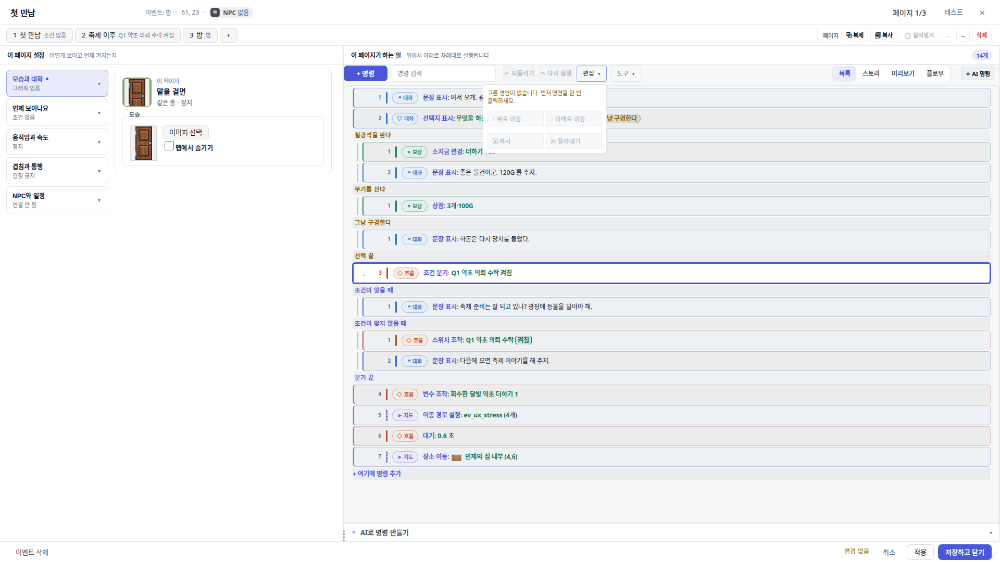
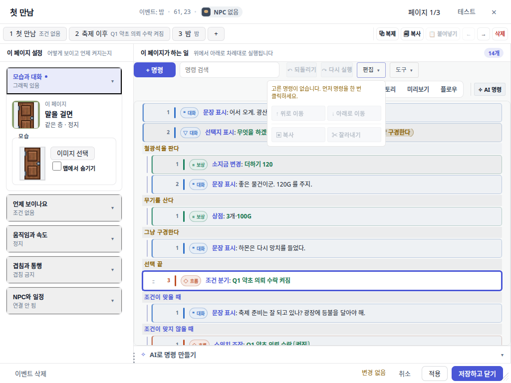
scrollWidth 129 > 116). 14개 중 8개.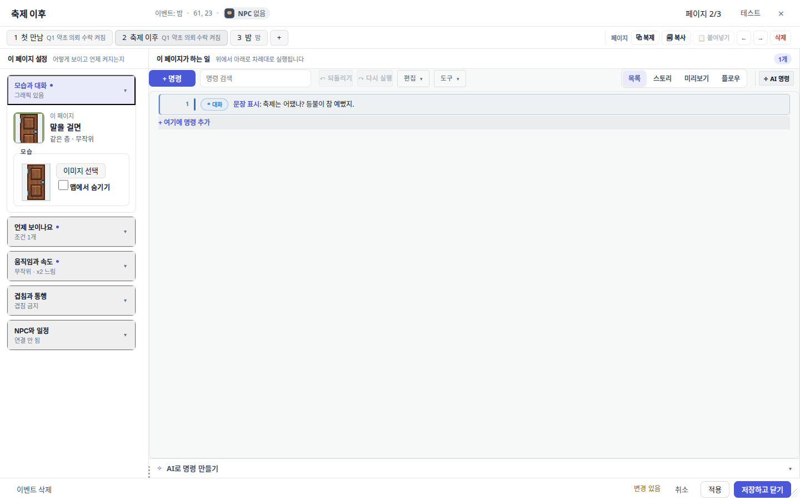
| 영역 (뷰포트) | 빈 화소 비율 | 비고 |
|---|---|---|
| 명령 영역 · 목록 보기 (1440) | 91.2% | 14명령 중 12 보임 |
| 명령 영역 · 스토리 보기 (1440) | 96.3% | 카드 여백이 크다 |
| 명령 영역 · 플로우 보기 (1440) | 92.4% | |
| 명령 영역 · 미리보기 보기 (1440) | 88.4% | 회색 무대 자체가 빈 면 |
| 명령 영역 · 빈 페이지 (1440) | 98.9% | |
| 설정 열 (1920) · 명령 열 (1920) | 95.6% · 92.3% | 폭이 늘어도 채울 내용이 없다 |
| 명령 피커 (1440) | 96.4% | 42px 전폭 행 13개 |
| 문장 표시 대화상자 · 그 미리보기 우물 | 91.3% · 69.4% | 940×680 모달 |
| 이동 경로 대화상자 | 82.6% | 1120×720, 하단이 잘려 스크롤 |
| AI 도크 펼침 (1440) | — | 명령 열 높이의 31% (237 / 772px) 를 차지 |
빈 화소 = 휘도 232 이상·채도 14 미만 픽셀. 배경·카드 바탕·테두리 안쪽을 모두 포함하므로 「정보가 없는 면적」의 근사치다.
편집기는 어느 뷰포트에서도 화면 전체를 덮는 모달이고, 그 위에 모달이 두 층 더 쌓인다. Escape 는 어디서 눌러도 편집기 전체를 닫으려 든다.
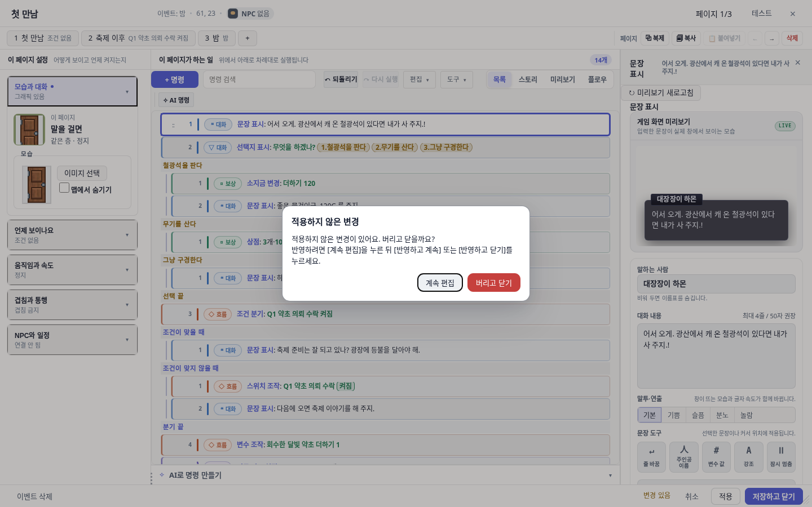
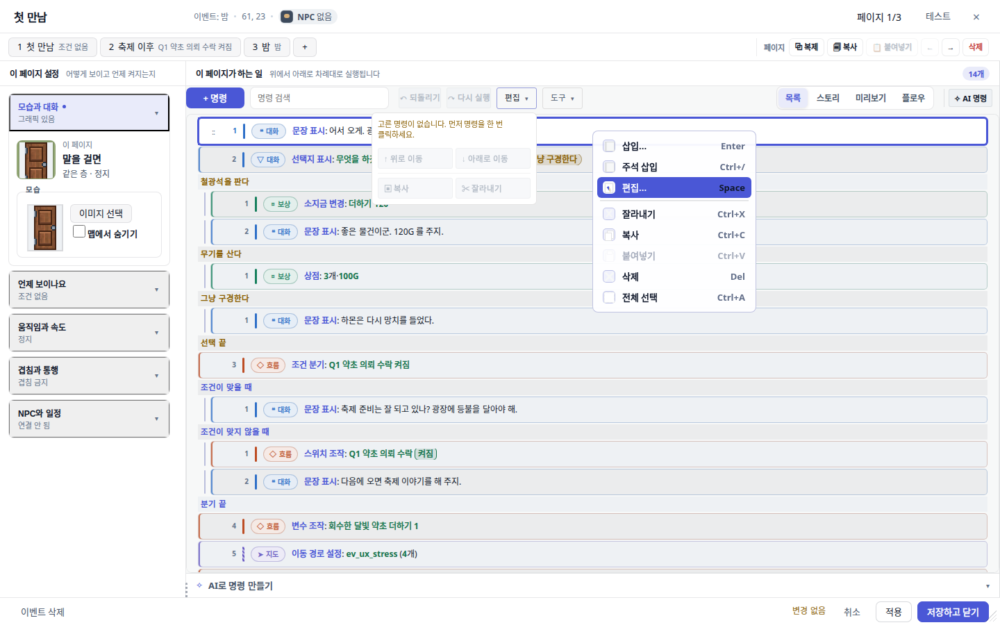
details.open 유지) 그 위에 우클릭 메뉴가 겹친다. 두 메뉴는 같은 8개 항목의 두 판이다. 팝오버는 선택이 없을 때 버튼을 비활성화하는 대신 「고른 명령이 없습니다」 문장을 띄운다.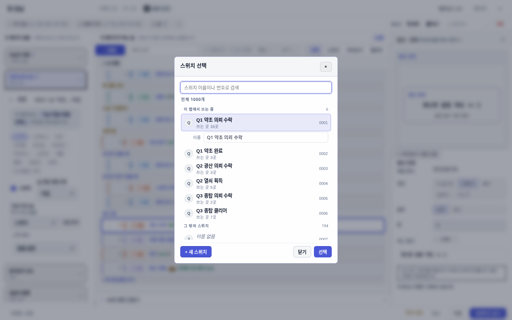
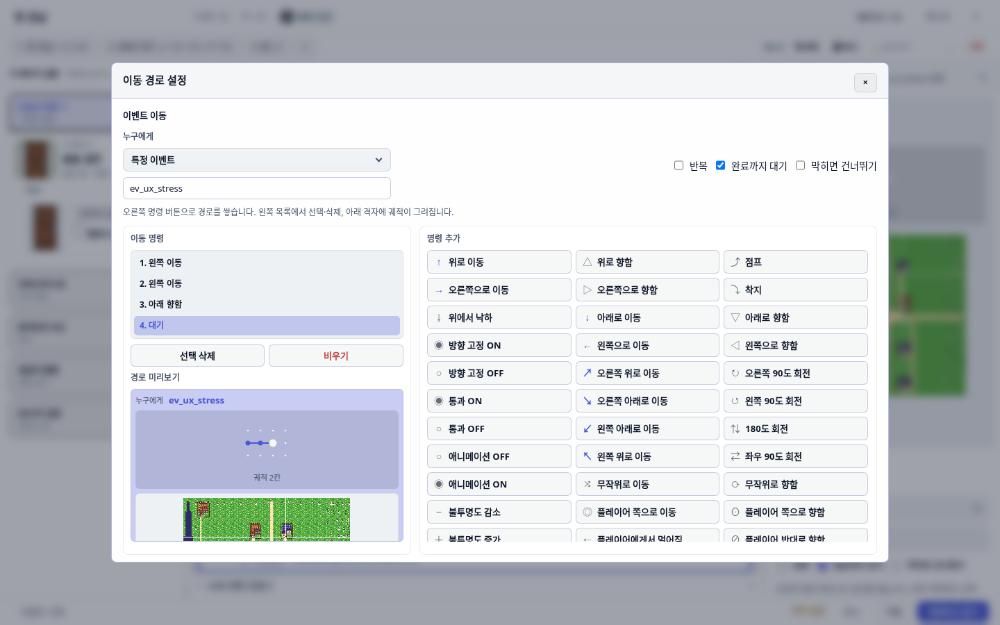
ev_ux_stress 입력이 그대로 노출된다. 명령 버튼 40개가 같은 크기 격자로 놓이고 하단 행은 900px 높이에서 잘린다.| 층 | 무엇 | 크기 (1440×900) | Escape 가 하는 일 |
|---|---|---|---|
| 1 | 이벤트 편집기 모달 | 1440×900 = 창 전체. 1024·1920 에서도 창 = 뷰포트 | 편집기 닫기 시도 → 변경이 있으면 확인창 |
| 2 | 명령 대화상자 (문장·선택지·분기·이동 경로·장소 이동·상점 …) | 780×520 ~ 1390×850, 종류마다 다름 | 대화상자 닫기 |
| 3 | 레코드 선택 · 그래픽 · 조건 종류 드롭다운 | 460×580 (스위치) · 700×571 (Graphic) | 선택 닫기 |
| 4 | 확인 대화상자 | 440×160 | — |
편집기가 화면 전체를 덮으므로 이벤트를 고치는 동안 맵이 보이지 않는다. 「장소 이동」의 목적지, 「이동 경로」의 궤적, NPC 의 위치 — 전부 지도 위의 사실인데 지도는 편집기 뒤에 있다. 대화상자마다 미니맵을 다시 그리는 이유가 이것이다.
2026-07-07 리뷰 이후 탭 이름·검색·즐겨찾기·그리드가 붙었다. 그래도 127개 명령을 42px 전폭 행으로 나열하니 한 화면에 13개다.
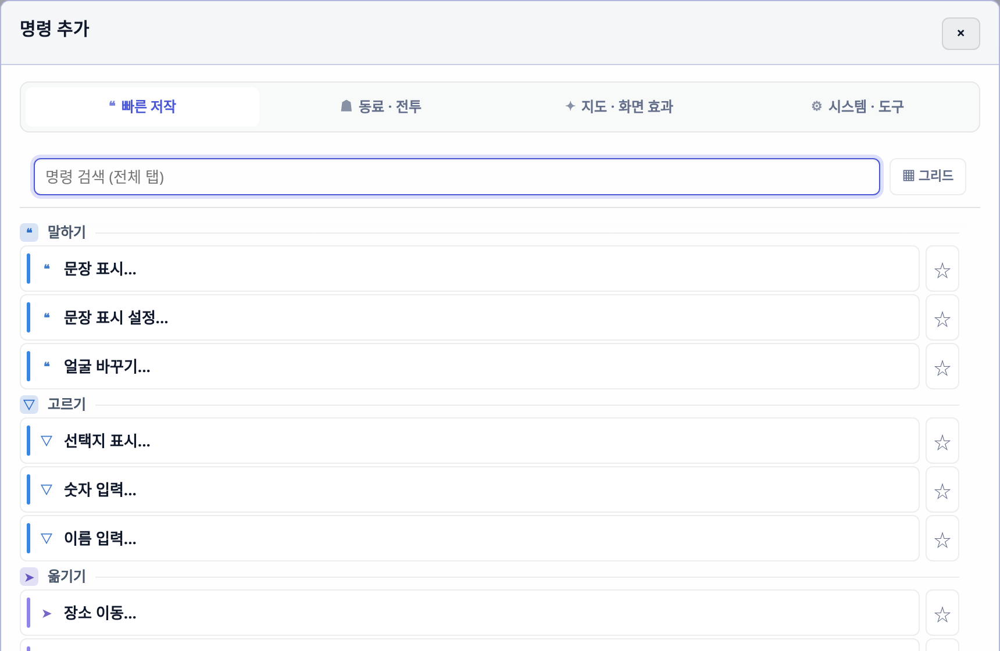
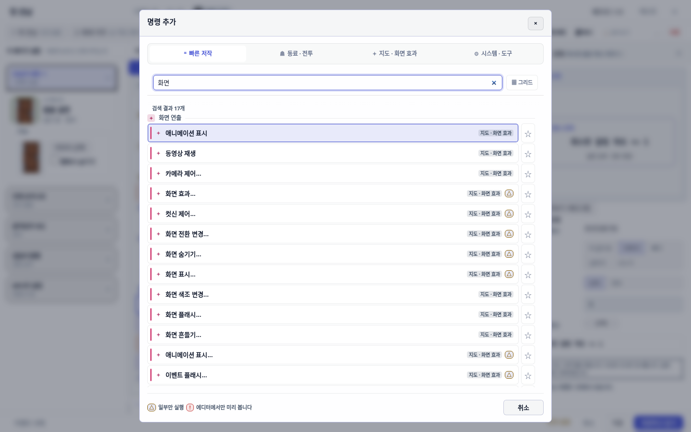
| 탭 | 그룹 | 명령 | 배지 달린 명령 |
|---|---|---|---|
| 빠른 저작 | 말하기 · 고르기 · 옮기기 · 거래 · 흐름 · 소리 | 37 | 7 |
| 동료 · 전투 | 전투 · 파티 · 능력·성장 · 모습·이름 | 21 | 3 |
| 지도 · 화면 효과 | 조명·날씨 · 화면 연출 · 그림 · 지도 · 값 읽기 | 43 | 22 |
| 시스템 · 도구 | 시스템 · 도구 | 26 | 21 |
| 합계 | 127 | 53 (42%) |
세 번째·네 번째 탭은 절반 이상이 「일부만 실행」 또는 「에디터 전용」이다. 그런 명령을 실행 가능한 것과 같은 크기·같은 위치에 두면, 초심자는 넣고 나서 플레이에서야 안 된다는 걸 안다. 그리드 보기(cur-14)는 아이콘 자리에 같은 글리프를 반복하고 즐겨찾기 별을 별도 칸으로 떼어 놓아 밀도가 리스트보다 낮다.
헤더 한 줄에서 이 창이 「무엇」을 편집하는지 읽어 낼 수 없다.
ev_ux_stress (4개)」, 이동 경로 대화상자의 「특정 이벤트 [ev_ux_stress]」 입력. 2026-07-07 리뷰의 「높음-2」가 그대로 남아 있다.cur-18).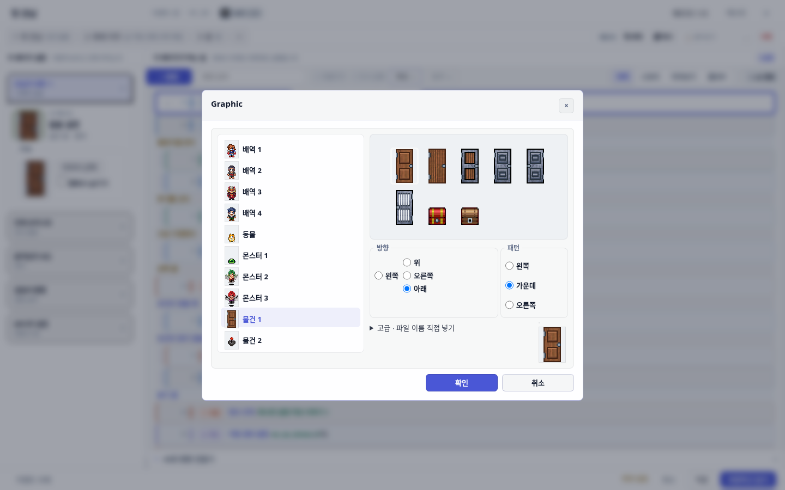
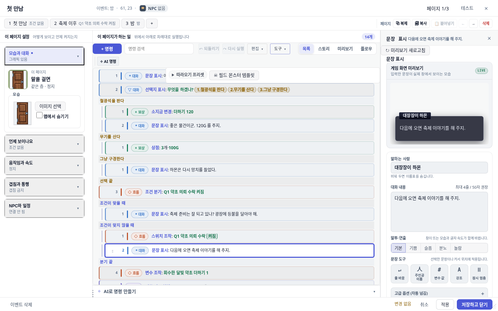
증상은 여러 개지만 뿌리는 하나다. 문제를 만날 때마다 보기·편집면·시트를 하나 더 얹었고, 앞 세대는 그대로 두었다.
| 날짜 | 얹은 것 | 커밋 | 남은 것 |
|---|---|---|---|
| 2026-06-29 | legacy CSS | f20d0ed9 | legacy 시트 932줄 |
| 2026-07-03 | 명령 편집 모달 + part-1~4 · modern 시트 | 552b440e | 모달, 시트 6,868줄 |
| 2026-07-07 | modernize 시트 (이미지 리치 리뷰 후속) | 021012fd | 1,518줄 |
| 2026-08-04 | 인라인 인스펙터 (모달 없이 우측에서 편집) + mockup · blocks 시트 | ae6a3ee0 · 5e72f34f | 인스펙터와 모달이 공존, 1,961줄 |
| 2026-08-07 | 스토리 보기 (기본값) | 1bb59708 | 목록 + 스토리 |
| 2026-08-24 · 25 | windowing · balanced 시트 (캐스케이드 최종 승자) | 3986f6af · e35dfcbf | 2,514줄 |
| 2026-08-28 | 좌측 요약 레일 + 넓은 면 편집 + 레코드 픽커 통합 | (제안서 구현분) | 1320px 이상에서만 넓은 면, 1440 에서는 268px 레일 |
| 2026-08-29 · 30 | 미리보기 보기 · 플로우 보기 | a4a23ca9 · cf2471cf | 보기 4종 |
2026-07-07 리뷰의 P0 여섯 항목은 대부분 반영됐다(피커 탭 이름·검색, 레코드 픽커 검색, 카테고리 색 레일, 선택지·스위치 다이얼로그, 배지 범례). 2026-08-28 제안도 구현됐다. 개별 수정은 다 들어갔는데 전체는 더 복잡해졌다 — 각 수정이 자기 시트와 자기 문법을 들고 왔고, 아무도 앞 세대를 지우지 않았기 때문이다. 버튼 26종·글자 크기 8종·라운딩 10종은 그 세대 수를 그대로 반영한다.
그래서 이번 제안은 추가가 아니라 삭제 목록이다. 보기 4 → 1, 편집면 2 → 1, 조건 경로 2 → 1, 메뉴 2 → 1, CSS 세대 6 → 1. 남는 하나를 어떻게 그릴지가 다음 절이다.
새 기능은 하나(인라인 명령 팔레트)뿐이다. 나머지는 있는 것을 하나로 합치고, 남는 것을 지운다.
번호 · 분류 막대 · 아이콘 · 종류 · 사람 문장. 보기 전환을 없애고, 스토리·플로우가 잘 보여 주던 분기 구조는 들여쓰기·연결선·분기 머리 행으로 목록에 흡수한다. 미리보기는 보기가 아니라 인스펙터 위의 「무대」로 상주한다.
더블 클릭은 모달을 열지 않고 인스펙터의 첫 필드에 포커스를 준다. 지도·카탈로그처럼 넓이가 필요한 편집은 인스펙터 자리 위로 미는 사이드 시트다. 목록은 계속 보인다. 가운데 모달은 확인 질문 하나만 쓴다.
팔레트·시트·메뉴가 열려 있으면 그것만 닫힌다. 편집기는 버튼으로만 닫힌다. 바깥 클릭은 팝오버를 닫는다. 확인 문구에 나오는 버튼 이름은 실제 버튼과 같다.
| 지우는 것 | 대신 | 이유 |
|---|---|---|
| 보기 전환 (목록 · 스토리 · 미리보기 · 플로우) | 대본 하나 + 인스펙터 무대 | 같은 데이터의 네 문법. 분기 구조는 행 들여쓰기·연결선으로 충분히 보인다 |
명령 편집 모달 (event-command-edit-dialog) | 인스펙터 · 사이드 시트 | 인스펙터와 같은 폼을 두 번 그린다. 열리는 동안 목록이 가려진다 |
| 「편집 ▾」 팝오버 · 「도구 ▾」 드롭다운 | 우클릭 메뉴 · 「⋯」 하나 | 우클릭 메뉴의 복제. 바깥 클릭에 닫히지 않는다 |
| 페이지 관리 줄 (복제 · 복사 · 붙여넣기 · ← · → · 삭제) | 탭 우클릭 · 탭 드래그(이미 구현) · 「⋯ 페이지」 | 상시 노출할 빈도가 아니다. 복제/복사 아이콘이 구분되지 않는다 |
| 좌측 레일의 폼 (조건 칩 13개 · 고급 조건 · 시작 방식 …) | 「이 페이지」 카드 = 문장 요약. 편집은 인스펙터 | 268px 안에 폼을 넣으면 넘치고, 넓은 면을 주면 빈다. 편집면은 하나면 된다 |
| 「고급 조건」 드롭다운 + 조건 추가 버튼 | 조건 추가 버튼 하나 (인스펙터) | 칩과 같은 일을 하는 두 번째 경로 |
| 「선택 끝」「분기 끝」 행 · 카드마다 붙은 ↑↓✎✕ | 들여쓰기 · 선택 행의 우클릭·단축키 | 정보 없이 세로 공간과 버튼 수만 늘린다 |
| 헤더의 「이벤트: 밤」 「NPC 없음」 「페이지 1/3」 | 이벤트 이름(편집 가능) · 맵 이름 · 좌표 | 파생값·중복·부정 상태를 제목 줄에서 뺀다 |
| 편집기 닫기 확인창 (「적용하지 않은 변경」) | 라이브 적용 + 되돌리기(Ctrl+Z) · 닫기 | 인스펙터는 이미 즉시 반영이다. 닫기 질문은 존재하지 않는 버튼을 가리킨다 |
| CSS 세대 5개 (legacy · part · modernize · mockup · balanced) | 시트 1개, 토큰 1세트 | 21,329줄 중 문법이 하나면 3,000줄이면 된다 |
1180px 폭으로 그린 CSS 목업이다(1280 뷰포트에 해당). 스크린샷이 아니라 실제 HTML 이므로 확대해서 볼 수 있다. 아이콘은 단일 SVG 세트, 글자 크기는 12 · 13 · 15 · 18 넷, 라운딩은 6 · 4 둘이다.
개선 · 목업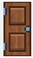
대장장이 하몬 이슬 장터 마을 · 61, 23 · 3 페이지 테스트어서 오게. 철광석이 있다면 내가 사 주지.대장장이 하몬
무엇을 하겠나?3갈래
좋은 물건이군. 120G 를 주지.대장장이 하몬
하몬은 다시 망치를 들었다.
축제 준비는 잘 되고 있나?대장장이 하몬
다음에 오면 축제 이야기를 해 주지.대장장이 하몬
칸 배분 240 · 가변 · 360. 이 목업은 220 · 가변 · 340 으로 그렸다. 1440 에서 대본 폭은 약 810px, 32px 행 17개가 스크롤 없이 들어간다(현재 38px 행 12개). 왼쪽 「이 페이지」 카드의 줄을 누르면 오른쪽 인스펙터가 그 설정(모습·조건·시작·움직임·통행·NPC)으로 바뀐다 — 명령과 페이지 설정이 같은 자리에서 같은 폼 문법으로 편집된다.
좋은 물건이군. 120G 를 주지.대장장이 하몬
--text-2요약 13px --text-1, 사람 문장 — 원시 ID 없음, 강조는 분류색 굵게보조 정보 회색 알약 하나분기 들여쓰기 24px + 점선 안내선 + 머리 행 26px, 끝 행 없음문장 표시처럼 폼이 작은 명령은 인스펙터에서 끝난다. 장소 이동처럼 지도가 필요한 명령은 인스펙터 자리 위로 시트가 밀려 나온다. 두 경우 모두 대본은 왼쪽에 남아 있다.
어서 오게. 광산에서 캐 온 철광석이…
무엇을 하겠나?
현재 인스펙터가 가진 것(무대 · 말하는 사람 · 내용 · 말투 · 문장 도구)을 그대로 쓴다. 달라지는 것은 「이 폼이 유일한 편집면」이라는 점과, 무대가 실제 320×240 비율의 게임 화면이라는 점이다.
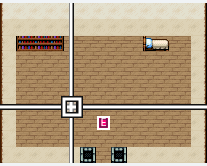
시트는 인스펙터와 같은 폭·같은 문법이고 오른쪽에서 밀려 나온다. 대본 행 7 이 선택된 채 보이므로 「무엇의 목적지를 고르는 중인지」를 잃지 않는다. 상점 카탈로그 · 이동 경로 작곡 · 그래픽 선택도 같은 시트다. 현재의 「선택 완료」와 「확인」 두 단계는 하나로 준다.
「+ 명령」이나 ↵ 를 누르면 삽입 위치 바로 아래에 팔레트가 열린다. 검색이 먼저고, 28px 두 줄 배치라 한눈에 16개가 보인다. RM2003 4탭 전체 보기는 팔레트 안의 링크로 남긴다.
개선 · 목업어서 오게. 광산에서 캐 온 철광석이 있다면 내가 사 주지.대장장이 하몬
무엇을 하겠나?3갈래
| 항목 | 현재 피커 | 팔레트 |
|---|---|---|
| 여는 위치 | 화면 가운데 모달 860×840 | 삽입 행 바로 아래, 640×~340 |
| 첫 화면에 보이는 명령 | 13 | 16 (최근 · 자주) |
| 행 | 42px 전폭, 라벨 + 별 | 28px 두 줄, 아이콘 + 라벨 + 출처 |
| 분류 | 4탭 + 그룹 머리 17개 | 칩 6개 (분류색과 같은 색) |
| 「일부만 실행」 명령 | 같은 크기, △ 배지, 범례는 하단 | 행 안에 「일부만 실행」 글자로 표시. 기본 정렬에서 뒤로 |
| 중복 라벨 (「애니메이션 표시」 2건) | 그대로 | 하나로 합치거나 「(구형)」 접미 — 카탈로그 정리 필요 |
| RM2003 4탭 | 기본 화면 | 「전체 127개 · 4탭으로 보기」 링크 → 시트 |
페이지 탭이 조건을 문장으로 말하고, 뒤 페이지가 앞 페이지를 가릴 때 탭에서 경고한다(eventPageShadow.ts 판정을 화면으로). 빈 페이지는 무엇을 할 수 있는지 세 갈래로 말한다.
「가림」 판정은 이미 엔진에 있다(src/project/eventPageShadow.ts, 린트 event-page-shadowed). 지금은 AI 도구와 린트만 그것을 보고, 편집기 화면은 보지 않는다. AI 도크는 「AI 로 초안」 버튼과 「⋯」 안으로 들어가고, 열리면 인스펙터 자리(시트)에서 초안을 보여 준다 — 대본 높이의 31% 를 상시 점유하지 않는다.
전부 src/styles/tokens.css 에 이미 있는 값이거나, 그 값에서 파생한다. 새 색은 분류색 6종만이다.
| 규격 | 값 | 지금 |
|---|---|---|
| 글자 크기 | 12 보조 (종류 · 힌트 · 번호)13 본문 (요약 · 폼 값)15 제목 (인스펙터 · 카드)18 이벤트 이름 | 8~9종, 11px 이하 41~70% |
| 행 높이 | 명령 32 · 분기 머리 26 · 폼 입력 32 · 툴바 버튼 30 | 38 · 40 · 42 · 46 · 48 · 52 · 54 혼재 |
| 라운딩 | 바깥(카드 · 입력 · 버튼) 6 · 안쪽(알약 · 칩) 4. 원형은 아바타에만 | 10종 |
| 칸 배분 | 240 · 가변 · 360 (1280 이상) / 1280 미만: 인스펙터 320, 카드 200 / 1024 미만: 카드 접힘 | 268 · 가변 · 340, 1320↑ 에서 660 |
| 버튼 | 채움 1 (한 화면에 하나) · 테두리 · 유령 · 아이콘 32×30 · 위험 텍스트 · 알약 칩 = 6종 | 24~32종 |
| 아이콘 | SVG 16px, 1.5px 획, 한 세트(Phosphor 또는 자체 제작 32종). 이모지 · 글리프 문자 금지 | SVG 0, 이모지·글리프 43 |
| 텍스트 색 | --text-1 요약·값 / --text-2 종류·라벨 / --text-3 는 순백 위 12px 이상에서만 | 틴트 위 --text-3 11px 가 대비 실패 37건의 원인 |
| 액센트 | 인디고 하나 (--accent). 선택 행 · 채움 버튼 · 포커스 링 | 2026-08-27 에 이미 통일됨 |
| 분류색 6종 (막대 · 아이콘 · 팔레트 칩에만) | 토큰 | 포함 명령 |
|---|---|---|
| 대화 | --cat-talk #4A57D6 | 문장 · 선택지 · 숫자·이름 입력 · 얼굴 · 문장 설정 |
| 흐름 | --cat-flow #8A5E00 | 분기 · 스위치 · 변수 · 대기 · 라벨 · 반복 · 타이머 |
| 이동 · 지도 | --cat-move #0F7490 | 장소 이동 · 이동 경로 · 이벤트 이동·삭제 · 타일 |
| 거래 · 아이템 | --cat-trade #18764F | 소지금 · 아이템 · 상점 · 여관 · 보관 상자 · 제작 |
| 화면 · 소리 | --cat-screen #7A3E9D | 그림 · 화면 효과 · 날씨 · 조명 · BGM · 효과음 |
| 동료 · 전투 · 시스템 | --cat-system #64748B | 전투 · 파티 · 능력 · 시스템 · 도구 |
분류색은 텍스트에 쓰지 않는다(대비). 요약 안 강조(굵은 분류색)만 예외이며 13px 굵게 · 순백 위로 제한한다 — 위 여섯 색은 모두 순백 위 4.5:1 이상이다(#8A5E00 5.9, #0F7490 5.5, #18764F 6.2, #7A3E9D 6.9, #64748B 4.8, #4A57D6 6.0). DESIGN.md 의 --cmdcat-* 통합 방향과 같다. 이 문서 목업의 SVG 아이콘은 형태와 크기를 보이기 위한 임시 그림이며, 구현 때는 라이선스를 확인한 단일 세트로 바꾼다.
아래 값은 scripts/qa-event-editor-ux.mjs 에 기준(C7~C14)으로 추가할 수 있다. 이 문서의 측정 스크립트가 부록에 있다.
| 지표 (1440×900, 목록/대본 보기, 14명령 이벤트) | 현재 | 목표 | 게이트 |
|---|---|---|---|
| 같은 데이터의 보기 방식 | 4 | 1 | event-view-toggle 부재 |
| 같은 명령의 편집면 | 2 | 1 | 더블 클릭 후 event-command-edit-dialog 부재 |
| 버튼 스타일 시그니처 | 26 | ≤ 6 | C7 |
| 글자 크기 종류 / 11px 이하 비율 | 8 / 41% | 4 / 0% | C8 |
| 라운딩 종류 | 10 | 2 | C9 |
| 이모지·글리프 아이콘 / SVG | 43 / 0 | 0 / 1세트 | C10 |
| 대비 4.5:1 미만 텍스트 | 37 | 0 | C11 |
| 명령 영역 빈 화소 | 91.2% | ≤ 65% | C12 (jimp) |
| 14명령 중 한 화면에 보이는 수 | 12 | 14 (17행분) | C13 |
| 겹치는 층 (편집기 → … → 확인) | 4 | 2 | 고정 레이어 수 ≤ 2 |
| 바깥 클릭 후 열린 팝오버 | 유지 | 닫힘 | C14 |
| Escape 가 편집기 전체를 닫으려 하는 경우 | 항상 | 0 (맨 위 층만) | 키 시나리오 |
| 확인 문구의 버튼 이름 ≠ 실제 버튼 | 2건 | 0 | 문자열 비교 |
원시 ID 노출 (ev_ sw_ var_ tex_) | 2곳 | 0 | innerText 정규식 |
| 이벤트 편집기 CSS | 56시트 · 21,329줄 · !important 89 | ≤ 3시트 · ≤ 3,000줄 · 0 | check-css-budget 래칫 하향 |
P0 는 코드 구조를 바꾸지 않고 문법만 고정한다. P1 이 표면을 합친다. P2 가 세대를 지운다. 각 단계는 그 자체로 출하 가능하다.
| 단계 | 하는 일 | 건드리는 곳 | 위험 · 계약 |
|---|---|---|---|
| P0 · 문법 1주 |
토큰 4·2·6 고정(글자 · 라운딩 · 버튼) · 이모지→SVG 세트 · --text-3 틴트 사용 금지 · 팝오버 바깥 클릭 닫힘 · Escape 층 규칙 · 확인 문구를 실제 버튼 이름으로 · 「편집 ▾」「도구 ▾」 제거(우클릭 · ⋯) · 헤더를 이벤트 이름 · 맵 이름 · 좌표로 · 원시 ID 를 이름으로 해석 · 「선택 끝」「분기 끝」 행 제거 |
event-editor.balanced.css (승자 시트에서 시작해 새 event-editor.grammar.css 로 옮김) · modal.ts (헤더 · Escape) · content.ts (툴바) · commandList.ts (행) · commandSummary.ts (ID 해석) · commandCategoryIcons.ts |
낮음. testid 유지. qa-event-editor-ux.mjs C1~C6 통과 유지 + C7~C14 추가. 우클릭 메뉴 e2e 계약 유지 |
| P1 · 표면 합치기 2~3주 |
보기 4→1: 목록에 분기 연결선·머리 행·계층 번호 흡수, 스토리 · 플로우 · 미리보기 보기 삭제, 무대를 인스펙터 상단에 상주 · 인스펙터 단일화(더블 클릭 = 포커스, 모달 폐지) · 인라인 팔레트 · 좌측 「이 페이지」 카드 + 인스펙터 편집 · 빈 페이지 상태 · AI 도크를 「⋯」와 시트로 | storyboardView.ts(493줄) · eventScriptModernViews.ts(322줄, 플로우·미리보기) · content.ts (열 구성 · 보기 토글 제거) · commandInspector.ts · commandEditDialog.ts · commandPicker.ts → 팔레트 · pageProps.ts · aiAssist.ts |
높음. e2e 369개 중 event-view-toggle 29 · event-storyboard 18 · event-command-edit-dialog 42 · event-command-picker 46 · evt-rail-group 5 파일이 testid 를 잡는다. 삭제 전에 대체 testid 매핑과 스펙 이관을 먼저 커밋한다 |
| P2 · 깊이와 세대 3~4주 |
사이드 시트(장소 이동 · 이동 경로 · 상점 · 그래픽 · 레코드 선택) · 페이지 줄 가림 경고 · 라이브 적용 + 닫기 확인 제거 · CSS 세대 5개 삭제(21,329 → ≤ 3,000) · check-css-budget 기준선 하향 |
subdialog.ts → 시트 · transferPlayerDialog.ts · moveRouteDialog.ts · commandBodyCommerce.ts · graphicDialog.ts · recordPickerDialog.ts · src/styles/editor/event-editor* |
중간. 대화상자 testid(event-record-picker-*, shop-*)는 시트 안에서 유지 가능. 라이브 적용은 eventEditorTrustLoop.test.ts 의 초안 계약과 맞춰야 함 |
순서를 이렇게 두는 이유. P0 만으로 버튼 26 → 6, 글자 8 → 4, 대비 37 → 0, 이모지 43 → 0 이 나온다 — 코드 구조를 안 바꾸고 절반의 「별로임」이 사라진다. P1 은 e2e 계약이 가장 많이 걸린 곳이므로 testid 매핑을 선행 커밋으로 떼어 낸다. P2 의 CSS 삭제는 P1 이 끝나 표면이 하나가 된 뒤에만 안전하다.
| 안 | 내용 | 판단 |
|---|---|---|
| 네 보기 유지 + 스타일만 통일 | 보기 토글은 두고 칩 · 아이콘 · 글자만 맞춘다 | 기각. 표면 수가 그대로다. 보기마다 렌더러가 따로 있어 통일이 유지되지 않는다(이번에 잰 결과가 그 증거) |
| RM2003 원본 재현 | 회색 2열 창, 텍스트 명령 목록, 대화상자 폼 | 기각. DESIGN.md 가 「no RM2K3 retro command-list presentation」을 명시한다. 이미 만든 미리보기 렌더러 13종을 버리게 된다 |
| 모달 대신 맵 옆 도킹 | 편집기를 맵 캔버스 옆 패널로 붙여 지도를 계속 보이게 한다 | 보류. 1440 에서 편집기 폭이 700px 이하로 떨어져 대본과 인스펙터가 공존하지 못한다. 지도 가시성은 시트 안 미니맵으로 대신한다. 1920 이상 전용 배치로 후속 검토 |
| 인스펙터 폐지, 모달만 | 단일 클릭은 선택만, 편집은 항상 모달 | 기각. 편집 중 목록이 가려지는 현재 문제를 고정한다 |
| 취소 · 적용 · 저장하고 닫기 유지 | 라이브 적용 대신 RM2003 식 트랜잭션을 유지하고 확인 문구만 고친다 | 대안으로 남김. P0 에서 문구는 고친다. 라이브 적용 전환은 P2 에서 eventEditorTrustLoop 계약을 보고 결정한다 |
| Ctrl+K 전역 팔레트에 명령 추가를 합침 | 기존 명령 팔레트(commandPalette.ts)를 재사용 | 기각. 삽입 위치와 떨어진다. 검색 · 키보드 조작 방식만 차용한다 |
/proc/<pid>/cwd 로 서빙 트리를 확인했다(다른 워크트리 서버를 잰 2026-08-28 사고 재발 방지).?freshProject=1 샘플 어드벤처에 window.__oprnEditorStore.update() 로 3페이지 · 14명령 이벤트를 주입했다. 문장 · 선택지 3갈래 · 소지금 · 상점 · 분기(스위치) · 스위치 · 변수 · 이동 경로 · 대기 · 장소 이동을 모두 포함해 행 문법을 한 화면에서 비교할 수 있게 했다.getComputedStyle 을 읽어 시그니처 · 글자 크기 · 라운딩 · 색을 집계했다. 대비는 텍스트 노드 색과 가장 가까운 불투명 조상 배경으로 WCAG 비율을 계산했다.src/styles/editor/event-editor* 56개 파일을 grep 으로 집계했다.2026-09-03-event-editor-ux-redesign-assets/measure-capture.mjs(주입 · 스크린샷 · DOM 계측), measure-capture-2.mjs(보정 · 2배 크롭), measure-blank.mjs(빈 화소). BASE 환경변수로 서버를 지정한다.이 세션은 저장되지 않습니다). 저장 상태 표시의 실제 동작은 측정하지 않았다.| 문서 | 무엇을 했나 | 지금 상태 |
|---|---|---|
docs/2026-07-07-event-editor-uiux-review.md | P0 여섯 항목 (피커 검색 · 레코드 검색 · 색 레일 · 선택지 다이얼로그 · 스위치 폼 · 배지 범례) | 대부분 반영됨. 피커 아이콘 · 이동 경로 원시 ID · 그래픽 걷기 미리보기는 남음 |
docs/2026-07-30-event-editor-ui-ux-critique.html · 2026-08-07-*-hostile-review.html | 껍데기 · 모달 · 레이아웃 적대적 리뷰 | 리사이저 · 포커스 트랩 등 반영. 모달 깊이는 그대로 |
docs/proposals/2026-08-28-event-editor-ui-improvement.html | 좌측 요약 레일 + 넓은 면 편집, 레코드 픽커 통합 | 구현됨. 1320px 이상에서만 넓은 면이 나오고, 1920 에서는 그 면의 95.6% 가 빈다 — 이 문서는 그 면 자체를 인스펙터로 합치자는 것 |
docs/2026-08-30-event-ai-dock-diff-redesign.html | AI 도크를 「끼워 넣기」에서 「목록 고치기」로 | 유지. 위치만 시트로 옮긴다 |
2026-09-03-event-editor-ux-redesign-assets/)cur-01~04 보기 4종 · cur-05~11 인스펙터와 대화상자 7종 · cur-12~15 피커 · cur-16~19 레일 · 레코드 선택 · 그래픽 · AI 도크 · cur-20~22 메뉴 겹침 · Escape 확인 · 팝오버 · cur-23~25 뷰포트 1024 · 1920 · 빈 페이지 · cur-26 편집기 밖 셸 · cur-27~29 도구 메뉴 · 레일 그룹 · x-* 2배 크롭 12장 · sprite-* face-* minimap-* 목업용 실제 에셋 크롭.
생성일 2026-09-03 · 작성 Claude Fable 5.1 (자율 세션) · 기준 커밋 main dd11c568 · 측정 서버 127.0.0.1:9631 (워크트리 witty-mayfly) · 뷰포트 1440×900 · 이 문서는 시점 기록이며 코드 변경을 포함하지 않는다.